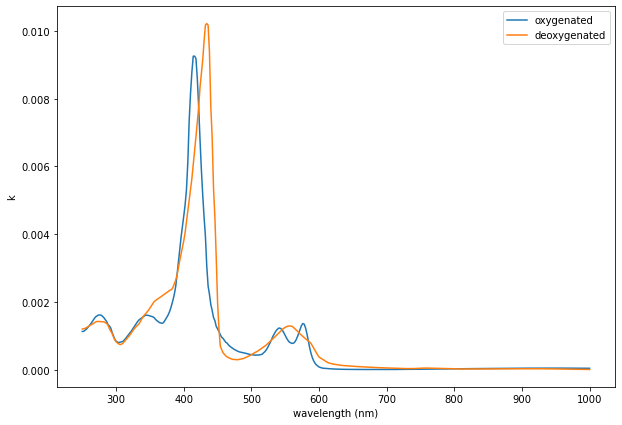
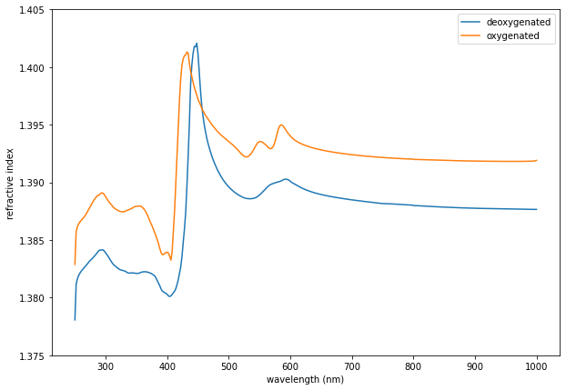
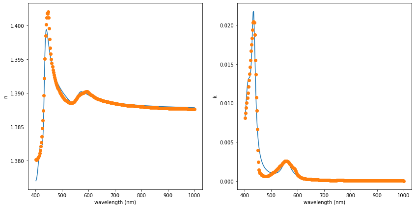
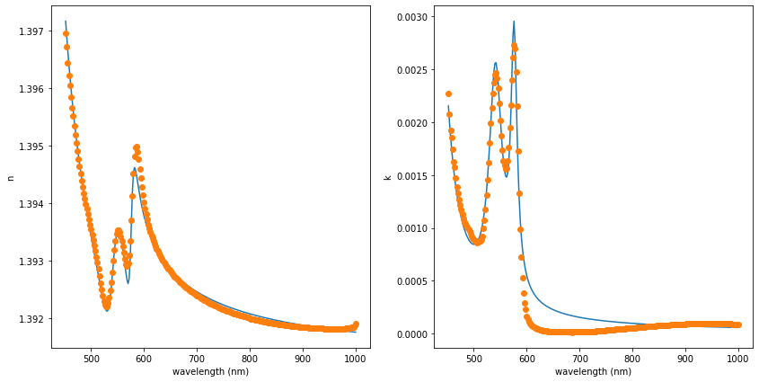

Kramers Kronig Analysis and Refractive Index of Hemoglobin/Red Blood Cells
Table of Contents
##+CSLSTYLE: ~/.emacs.d/elpa/org-ref-20211219.2130/citeproc/csl-styles/chicago-author-date-16th-edition.csl
This note was developed as I wanted to find a method for calculating the refractive index of biological materials, in particular for simulations of the hyperspectral optical-field-resolved microscope. Then focus of this note is particularly on calculating the refractive index of hemoglobin/red blood cells, however it can be applied in general to a host of materials where extinction spectra are known.
1. Description
In Bi and Yang 2013 a full model including the shape and refractive index of red blood cells is described. There, they address the modeling of complex refractive index of hemoglobin for this purpose. They suggest using the method as described in Faber et al. 2004.
In Faber et al. 2004, they describe how Kramers Kronig relations can be used to determine the complete refractive index of hemoglobin from extinction measurements of Hemoglobin in the form of red blood cells (both oxygenated and unoxygenated). Their analysis was based on the dataset provided by Scott Prahl (this data can be found through this website). Note that extinction spectra from performed as follows:
- Take experimentally measured values for absorption – related directly to \(\mu_{a}\) (this is derived from here).
- Use this to determine \(\kappa(\omega)\) (eq. (1) in Faber et al. 2004)
- Use \(\kappa(\omega)\) to then determine \(n(\omega)\) (eq. (2) in Faber et al. 2004). This is the real part of the refractive index.
In the following, we perform these three steps to compute the full complex refractive index of both oxygenated and deoxygenated red blood cells. So that this information can be incorporated into FDTD electromagnetic models, we also fit this dispersion data using Drude-Lorentz oscillators.
2. Headers and Functions for the Analysis
In the following block we load any needed packages for analysis. We also define three core functions that will be used in the remainder of this note:
n_kk(y, k, y_0, n_0, dw_prime)This function takes in wavelength and absorption data along with a single refractive index at a fixed wavelength to then determine the full real part of the refractive index of a medium through Kramers-Kronig analysis. The approach used is the same as described in Faber et al. 2004eps_drude_lorentz(p, y)Takes coefficients defined as a vector inpand uses those to calculate the complex epsilon of a material as a function of wavelengthy.residuals(p, y, eps_meas)Convenience function for calculating a vector of residuals that are used byscipy.optimize.least_squaresto then fit the measured permittivityeps_measusing oscillators defined byp. This can then be used to define materials for FDTD analysis (for e.g. using tools like MEEP).
#Setup the workspace %reset import numpy as np import matplotlib.pyplot as plt import scipy.io as sio import physical_constants_SI as pcSI import scipy.interpolate as interpolate import scipy.optimize as sco def n_kk(y, k, y_0, n_0, dw_prime): """ Evaluates the refractive index from the absorption values k as a function of frequency, w. The index is evaluated over all values w thus providing full complex index information (n + ik) for the material. Only one real index of refraction value, n_0 evaluated at frequency w_0, is needed for the offset. The absorption terms k can be derived from extinction data. This is very useful as often times the extinction is measured from many specimens in the laboratory, meaning that this offers a way to evaluate refractive index from a variety of complex substances. Inputs Units Description ------ ----- ----------- y nm Wavelength vector associated with vector of k values. Must be monotonic increasing. k Vector of k-values. Can be derived from extinction data. y_0 nm The central wavelength where a known index n_0 is provided. n_0 The known index at y_0. dw_prime 1/nm The spacing for the numerical integral over w_prime in the Kramers-Kronig calculation. This should be small-enough to provide convergence of the refractive index calculation. It is with respect to normalized frequency (simply 1/y) Outputs ----------- n Vector containing the real part of the refractive index """ #Normalized frequency (simply 1/wavelength) w_norm = 1/y w_norm_0 = 1/y_0 #Interpolation function: f_k = interpolate.interp1d(np.flip(w_norm), np.flip(k), kind='cubic') n_prime = np.zeros(w_norm.shape) cc = 0 for w_norm_eval in w_norm: #You are going to have 3 ranges: w_norm_p1 = np.min([w_norm_0, w_norm_eval]) w_norm_p2 = np.max([w_norm_0, w_norm_eval]) sum1 = 0 sum2 = 0 sum3 = 0 #This will be the first range: N_1 = int(np.ceil((w_norm_p1 - dw_prime - w_norm[-1])/dw_prime)) if (N_1 >= 0): w_norm_prime_1 = np.linspace(w_norm[-1], w_norm_p1 - dw_prime, N_1) k_Hb_prime_1 = f_k(w_norm_prime_1) integrand_1 = w_norm_prime_1*k_Hb_prime_1*(w_norm_0**2 - w_norm_eval**2)/\ (w_norm_eval**2 - w_norm_prime_1**2)/(w_norm_0**2 - w_norm_prime_1**2) sum1 = np.trapz(integrand_1, x=w_norm_prime_1) #This will be the second range: N_2 = int(np.ceil((w_norm_p2 - dw_prime - (w_norm_p1 + dw_prime))/dw_prime)) if (N_2 >= 0): w_norm_prime_2 = np.linspace(w_norm_p1 + dw_prime, w_norm_p2 - dw_prime, N_2) k_Hb_prime_2 = f_k(w_norm_prime_2) integrand_2 = w_norm_prime_2*k_Hb_prime_2*(w_norm_0**2 - w_norm_eval**2)/\ (w_norm_eval**2 - w_norm_prime_2**2)/(w_norm_0**2 - w_norm_prime_2**2) sum2 = np.trapz(integrand_2, x=w_norm_prime_2) #This will be the third range: N_3 = int(np.ceil((w_norm[0] - (w_norm_p2 + dw_prime))/dw_prime)) if (N_3 >= 0): w_norm_prime_3 = np.linspace(w_norm_p2 + dw_prime, w_norm[0], N_3) k_Hb_prime_3 = f_k(w_norm_prime_3) integrand_3 = w_norm_prime_3*k_Hb_prime_3*(w_norm_0**2 - w_norm_eval**2)/\ (w_norm_eval**2 - w_norm_prime_3**2)/(w_norm_0**2 - w_norm_prime_3**2) sum3 = np.trapz(integrand_3, w_norm_prime_3) n_prime[cc] = (-2/np.pi)*(sum1 + sum2 + sum3) cc = cc + 1 n = n_0 + n_prime return n def eps_drude_lorentz(p, y): eps = p[0] p_sets = int((p.size - 1)/3) for cc in range(0, p_sets): alpha = p[3*cc + 1] beta = p[3*cc + 2] sigma = p[3*cc + 3] eps = eps + sigma*alpha**2*y**2/(alpha**2*y**2 - 1 - 1j*y*beta) return eps def residuals(p, y, eps_meas): eps_calc = eps_drude_lorentz(p, y) M = np.abs(eps_calc - eps_meas) return M
3. Calculate k-Values from Extinction Data
In the following code block, we evaluate the k-values using the extinction data. This follows directly from the method described by Prahl here.
data = sio.loadmat('./Hb_extinction_data.mat') wavelength = np.squeeze(data['wavelength']) w_norm = 1/wavelength HbO2 = np.squeeze(data['HbO2']) Hb = np.squeeze(data['Hb']) x = 150 #g/liter of solution alpha = 2.303*x/64500 k_Hb = alpha*wavelength*1e-7*Hb/(4*np.pi) k_HbO2 = alpha*wavelength*1e-7*HbO2/(4*np.pi) fig = plt.figure() fig.set_size_inches(10, 7) plt.plot(wavelength, k_HbO2, label = 'oxygenated') plt.plot(wavelength, k_Hb, label = 'deoxygenated') plt.xlabel('wavelength (nm)') plt.ylabel('k') plt.legend() display(fig)

4. Calculate Refractive Index from k-Values Using Kramers-Kronig Relation
Now we use the method discussed in Faber et al. 2004 to calculate the refractive index using Kramers-Kronig analysis.
#Central frequency w_norm_0 = 1/800 x = 300 #g/liter of solutiond... #currently using as a scaling factor for data fitting alpha = 2.303*x/64500 k_Hb = alpha*wavelength*1e-7*Hb/(4*np.pi) k_HbO2 = alpha*wavelength*1e-7*HbO2/(4*np.pi) #Set number of desired points over whole range and find #resolution for integral: dw_int N = 5000 dw_int = (w_norm[0] - w_norm[-1])/N n_prime = np.zeros(w_norm.shape) n_prime = n_kk(wavelength, k_Hb, 800, 1.388, dw_int) n_prime_O2 = n_kk(wavelength, k_HbO2, 800, 1.392, dw_int) fig = plt.figure() fig.set_size_inches(10, 7) plt.plot(wavelength, n_prime, label='deoxygenated') plt.plot(wavelength, n_prime_O2, label='oxygenated') plt.ylim(1.375, 1.405) plt.legend() plt.xlabel('wavelength (nm)') plt.ylabel('refractive index') display(fig)

5. Drude-Lorentz Oscillator Fit to Data
Finally, we take the permittivity of this analysis and use it to determine a series of oscillators that will fit the data using a Drude-Lorentz model. We use the model as discussed in the MEEP documentation, and the appendix of Buckley et al. 2021, for convenience as we aim to use this information inside of MEEP for other purposes.
Note that for convenience, we only perform these fits over a fixed wavelength range greater than 450 nm (not the entire range). It could easily be extended if desired.
First, we perform the fit for the deoxygenated case.
eps_meas = (n_prime + 1j*k_Hb)**2 y_range = np.where(wavelength > 450) y_high = wavelength[y_range[0]] eps_meas = eps_meas[y_range[0]] p0 = np.array([1.92, 2.3, 0.08, 0.003, 1.8, 0.05, 0.005, 1.9, 0.05, 0.005]) res = sco.least_squares(residuals, p0, args=(1e-3*y_high, eps_meas), max_nfev = 50000, xtol=1e-8) eps_opt = eps_drude_lorentz(res.x, y_high*1e-3) fig = plt.figure() fig.set_size_inches(14, 7) ax1 = fig.add_subplot(1, 2, 1) ax1.plot(y_high, np.real(np.sqrt(eps_opt)), label='fit') ax1.plot(y_high, np.real(np.sqrt(eps_meas)), 'o', label='data') ax1.set_xlabel('wavelength (nm)') ax1.set_ylabel('n') ax2 = fig.add_subplot(1, 2, 2) ax2.plot(y_high, np.imag(np.sqrt(eps_opt)), label='fit') ax2.plot(y_high, np.imag(np.sqrt(eps_meas)), 'o', label='data') ax2.set_xlabel('wavelength (nm)') ax2.set_ylabel('k') display(fig)

print('eps_inf = ' + str(res.x[0])) num = 1 for cc in range(1, int((res.x.size - 1)/3)): print('') print('alpha' + str(num) + ' = ' + str(res.x[cc]) + '\n') print('beta' + str(num) + ' = ' + str(res.x[cc + 1]) + '\n') print('sigma' + str(num) + ' = ' + str(res.x[cc + 2]) + '\n') num = num + 1
epsinf = 1.9201699740848217
alpha1 = 2.3190820046237444
beta1 = 0.023172782638300284
sigma1 = 0.003503438456593364
alpha2 = 0.023172782638300284
beta2 = 0.003503438456593364
sigma2 = 1.7811844573232598
Next the same, but this time for the oxygenated case.
eps_meas_O2 = (n_prime_O2 + 1j*k_HbO2)**2 y_range = np.where(wavelength > 450) y_high = wavelength[y_range[0]] eps_meas_O2 = eps_meas_O2[y_range[0]] p0 = np.array([1.9, 2.3, 0.08, 0.003, 1.8, 0.05, 0.0005, 1.7, 0.05, 0.0005]) res_O2 = sco.least_squares(residuals, p0, args=(1e-3*y_high, eps_meas_O2), max_nfev = 50000, xtol=1e-8) eps_opt_O2 = eps_drude_lorentz(res_O2.x, y_high*1e-3) #squared_error(res.x, 1e-3*wavelength, eps_meas) fig = plt.figure() fig.set_size_inches(14, 7) ax1 = fig.add_subplot(1, 2, 1) ax1.plot(y_high, np.real(np.sqrt(eps_opt_O2)), label='fit') ax1.plot(y_high, np.real(np.sqrt(eps_meas_O2)), 'o', label='data') ax1.set_xlabel('wavelength (nm)') ax1.set_ylabel('n') ax2 = fig.add_subplot(1, 2, 2) ax2.plot(y_high, np.imag(np.sqrt(eps_opt_O2)), label='fit') ax2.plot(y_high, np.imag(np.sqrt(eps_meas_O2)), 'o', label='data') ax2.set_xlabel('wavelength (nm)') ax2.set_ylabel('k') #res display(fig)

print('eps_inf = ' + str(res_O2.x[0])) num = 1 for cc in range(1, int((res_O2.x.size - 1)/3)): print('') print('alpha' + str(num) + ' = ' + str(res_O2.x[cc]) + '\n') print('beta' + str(num) + ' = ' + str(res_O2.x[cc + 1]) + '\n') print('sigma' + str(num) + ' = ' + str(res_O2.x[cc + 2]) + '\n') num = num + 1
epsinf = 1.9310669208859819
alpha1 = 2.450224416259269
beta1 = 0.13423579986810846
sigma1 = 0.004352150925594353
alpha2 = 0.13423579986810846
beta2 = 0.004352150925594353
sigma2 = 1.8486922806894537